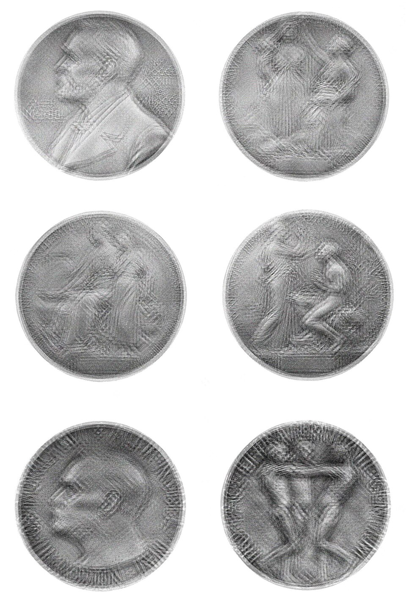
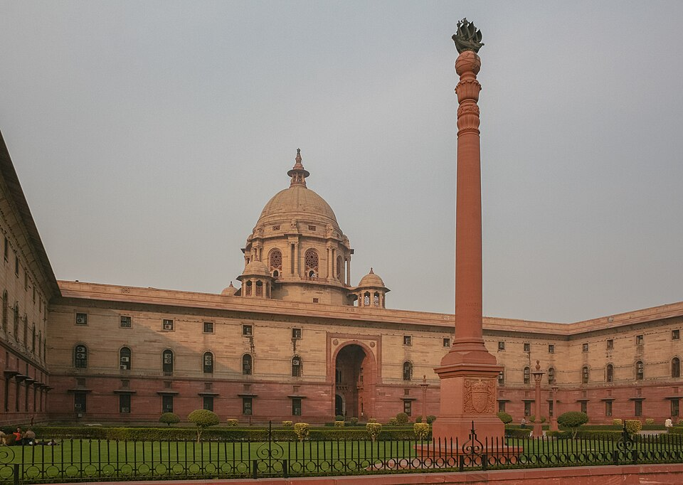

71st BPSC PYQInternational Booker 2025: "What is the title of the book by Banu Mushtaq that won the 2025 International Booker Prize?" — answer: Heart Lamp (tr. Deepa Bhasthi) — the first Kannada work and first short-story collection to win. Trap options were invented titles ("Light of the Heart", "Soul Lantern") plus "More than one of the above".
71st BPSC PYQNobel ↔ other-prize chain: "Awarded the Nobel Prize in Literature in 2024, Han Kang's novel 'The Vegetarian' won which other prestigious award?" — answer: International Booker Prize (2016). BPSC loves chaining one award to another. Same paper asked the 96th Oscars (2024): Emma Stone, Best Actress for Poor Things — the trap was La La Land (her first win, 89th Oscars).
70th BPSC PYQBharat Ratna & Nobel Peace one-liners: The 70th asked "recipient of Bharat Ratna for 20.." and "Who won the Nobel Peace Prize in .." — straight year-tagged recall. It also asked Payal Kapadia's Grand Prix at Cannes 2024 — answer: All We Imagine as Light — and the Goldman Environmental Prize 2024 (Asia) → Alok Shukla. Expect the same treatment for María Corina Machado (Peace 2025) and the Padma 2026 list.
💡 Deep-dive ready: Complete Padma Awards 2026 lists (all 5 Vibhushan + all 13 Bhushan + notable Shri), Padma 2025 recap, Bihar awardees both years, ceremony dates and award statics:
Padma Awards 2025 & 2026 Detail →
A. Nobel Prizes 2025 — Learn All Six Cold VERIFIED JUL 2026
Announced 6–13 Oct 2025; ceremony 10 Dec 2025 (Stockholm; Peace in Oslo). Prize money: 11 million SEK per prize.
Prize
Winner(s)
Work
Announced
Medicine
Mary E. Brunkow, Fred Ramsdell (US), Shimon Sakaguchi (Japan)
Peripheral immune tolerance — regulatory T cells as immune "security guards"
6 Oct 2025
Physics
John Clarke, Michel H. Devoret, John M. Martinis
Macroscopic quantum tunnelling & energy quantisation in superconducting circuits
7 Oct 2025
Chemistry
Susumu Kitagawa (Japan), Richard Robson (UK/Australia), Omar M. Yaghi (US)
Development of metal–organic frameworks (MOFs)
8 Oct 2025
Literature
László Krasznahorkai (Hungary)
"Compelling and visionary oeuvre that, in the midst of apocalyptic terror, reaffirms the power of art"
9 Oct 2025
Peace
María Corina Machado (Venezuela)
Promoting democratic rights and a peaceful transition from dictatorship
10 Oct 2025
Economics
Joel Mokyr (½), Philippe Aghion (¼), Peter Howitt (¼)
Innovation-driven growth; Aghion–Howitt's theory of creative destruction
13 Oct 2025
Statics that never age: first awarded 1901 (5 prizes); Economics added 1968 (Sveriges Riksbank). First Indian & first Asian laureate: Rabindranath Tagore, Literature 1913 (Gitanjali). First Indian woman: Mother Teresa, Peace 1979. Max 3 sharers; ceremony 10 Dec (Alfred Nobel's death anniversary); posthumous awards barred since 1974.
71st BPSC answer-key note: only one Literature Nobel is awarded per year — the exam officially rejected a candidate's claim of "more than one in 2024". Never pick "More than one of the above" for Nobel category counts.
🧠 Mnemonic — Nobel 2025 "My Physician Cooks Lovely Pasta Everyday"
Announcement order 6→13 Oct: Medicine (T-reg "security guards") → Physics (quantum tunnelling) → Chemistry (MOFs) → Literature (Krasznahorkai) → Peace (Machado) → Economics (Mokyr–Aghion–Howitt). People: "BRS guards, CDM tunnel, KRY builds frameworks".

Nobel Prize medals — the 2025 prizes were announced 6–13 Oct 2025 and conferred on 10 Dec 2025 (Stockholm; Peace at Oslo). (Image: Wikimedia Commons)
B. Bharat Ratna & Padma Awards — The R-Day Eve Ritual HOT
Bharat Ratna — window status:none announced in 2025 or 2026 (up to 15 Jul 2026). Last set: 5 awards for 2024 — Karpoori Thakur (posth., Bihar), L.K. Advani, P.V. Narasimha Rao (posth.), Chaudhary Charan Singh (posth.), M.S. Swaminathan (posth.); announced Jan–Mar 2024, conferred 30 Mar 2024.
Padma statics: instituted 1954; three classes — Vibhushan ("exceptional & distinguished") > Bhushan ("distinguished service of high order") > Shri ("distinguished service"). Announced 25 Jan (R-Day eve), conferred by the President at Rashtrapati Bhavan. Govt servants ineligible except doctors & scientists; Padma Awards Committee headed by the Cabinet Secretary; public can nominate. Awards are not titles (Art. 18(1)); Bharat Ratna capped at 3 per year (exceptionally 5 in 2024).
Year (R-Day eve)
Total
Vibhushan
Bhushan
Shri
Notes
2025 (76th R-Day)
139
7
19
113
23 women; 10 foreigners/NRI/PIO/OCI; 13 posthumous; 1 duo case; 7 from Bihar
2026 (77th R-Day)
131
5
13
113
19 women; 6 foreigners; 16 posthumous; 45 "unsung heroes"; 2 duo cases; Phase-1 ceremony 25 May 2026 (66 recipients); 3 from Bihar
First Hungarian-origin winner; £50,000; London, 10 Nov 2025; Kiran Desai shortlisted (The Loneliness of Sonia and Sunny)
10 Nov 2025
Int'l Booker 2025
Banu Mushtaq — Heart Lamp, tr. Deepa Bhasthi
First Kannada work & first short-story collection to win; Tate Modern, 20 May 2025
20 May 2025
Int'l Booker 2026
Yáng Shuāng-zǐ — Taiwan Travelogue, tr. Lin King
First Mandarin-language winner; Tate Modern, 19 May 2026
19 May 2026
Pulitzer 2025
Fiction: James — Percival Everett
Announced 5 May 2025 (Columbia Univ.); Public Service: ProPublica
5 May 2025
Pulitzer 2026
Fiction: Angel Down — Daniel Kraus
Announced 4 May 2026; History: We the People — Jill Lepore
4 May 2026
Jnanpith statics: instituted 1961 by Bharatiya Jnanpith; first awarded 1965 to G. Sankara Kurup (Malayalam, Odakkuzhal); ₹11 lakh + bronze Vagdevi (Saraswati) statuette; only living Indian citizens eligible.
Sahitya Akademi statics: est. 1954; awards in 24 languages (22 scheduled + English + Rajasthani); ₹1 lakh + copper plaque + shawl.
Booker statics: est. 1969, £50,000; Indian winners — Rushdie (1981), Roy (1997), Kiran Desai (2006), Adiga (2008). Int'l Booker: Geetanjali Shree's Tomb of Sand (2022) was the first Hindi winner. Pulitzer: est. 1917, Columbia University.
D. Film & Music — Oscars, National Film Awards, Grammy MATCHING BANK
Category
97th Oscars (2 Mar 2025)
98th Oscars (15 Mar 2026)
Best Picture
Anora (5 wins)
One Battle After Another (6 wins, 13 noms)
Best Director
Sean Baker (Anora)
Paul Thomas Anderson (One Battle After Another)
Best Actor
Adrien Brody (The Brutalist) — 2nd Oscar
Michael B. Jordan (Sinners)
Best Actress
Mikey Madison (Anora)
Jessie Buckley (Hamnet) — first Irish Best Actress
Notes
Host Conan O'Brien (debut); 23 categories; India's Laapataa Ladies not shortlisted; short film Anuja nominated, didn't win
24 categories — Best Casting added (first new category in 25 yrs); Sinners record 16 nominations (won 4); India's Homebound reached top-15 shortlist, missed final 5
71st National Film Awards (films of 2023): announced 1 Aug 2025; ceremony 23 Sep 2025, Vigyan Bhawan, conferred by President Murmu. Best Feature Film 12th Fail; Best Actor shared — Shah Rukh Khan (Jawan) + Vikrant Massey (12th Fail); Best Actress Rani Mukerji (Mrs. Chatterjee vs Norway); Best Direction Sudipto Sen (The Kerala Story). Dadasaheb Phalke 2023 → Mohanlal (conferred at this ceremony); 2022 → Mithun Chakraborty.
72nd NFA (films of 2024):not announced by 15 Jul 2026 — a live "watch" item.
Grammy & India: 67th (2 Feb 2025) — Chandrika Tandon WON Best New Age, Ambient or Chant Album for Triveni (with Wouter Kellerman & Éru Matsumoto); Chennai-born, sister of Indra Nooyi. Ricky Kej and Anoushka Shankar were nominees, not winners. 68th (1 Feb 2026) — Album of the Year: Bad Bunny (Debí Tirar Más Fotos, first all-Spanish AOTY); India-linked Sounds of Kumbha nominated Best Global Music Album.
Oscars & India statics: first Indian Oscar — Bhanu Athaiya (costume, Gandhi, 1983); Satyajit Ray Honorary Oscar 1992; Slumdog Millionaire 2009 (A.R. Rahman ×2, Resul Pookutty, Gulzar); 2023 — Naatu Naatu (RRR) + The Elephant Whisperers.
E. Sports & Gallantry Honours VERIFIED JUL 2026
National Sports Awards 2024 (announced 2 Jan 2025, conferred 17 Jan 2025, Rashtrapati Bhavan): 4 Khel Ratnas — D. Gukesh (chess, youngest World Champion), Harmanpreet Singh (hockey), Praveen Kumar (para-athletics, Paris Paralympics gold), Manu Bhaker (shooting, first Indian with 2 medals at one Olympics). 32 Arjuna awardees (17 para-athletes); Arjuna (Lifetime): Sucha Singh, Murlikant Rajaram Petkar (India's first Paralympic gold, 1972). MAKA Trophy 2024 → Chandigarh University.
2025 cycle: selection committee finalised names 24 Dec 2025 — Hardik Singh (hockey) sole Khel Ratna recommendation; 24 recommended for Arjuna incl. Divya Deshmukh, Tejaswin Shankar, Mehuli Ghosh and Aarti Pal — first-ever Yogasan athlete; no cricketer in the list.
Sports-award statics: Khel Ratna instituted 1991–92 (first winner Viswanathan Anand), renamed Major Dhyan Chand Khel Ratna in Aug 2021, ₹25 lakh. Arjuna (1961) ₹15 lakh; Dronacharya (1985) ₹15 lakh; Dhyan Chand lifetime (2002) ₹10 lakh. National Sports Day = 29 Aug (Dhyan Chand's birth anniversary).
Gallantry — Republic Day 2026: 70 awards = 1 Ashoka Chakra → Gp Capt Shubhanshu Shukla (Axiom-4 mission pilot, first Indian on the ISS) + 3 Kirti Chakra (incl. Gp Capt Prasanth Balakrishnan Nair, Gaganyaan astronaut-designate) + 13 Shaurya Chakra + others.
Gallantry — Independence Day 2025 (Operation Sindoor context): 127 gallantry + 40 distinguished-service awards; 4 Kirti Chakra (incl. Capt Lalrinawma Sailo — first Mizo SF officer to get KC). Republic Day 2025: 93 personnel; 2 Kirti Chakra, 14 Shaurya Chakra; no PVC/MVC/Ashoka Chakra.
Order of precedence:PVC > Ashoka Chakra > MVC > Kirti Chakra > Vir Chakra > Shaurya Chakra. Wartime trio instituted 26 Jan 1950; peacetime trio 1952. Announced twice a year — R-Day & I-Day. Jeevan Raksha Padak 2025: 30 awards (6 Sarvottam + 6 Uttam + 18 JRP).

Rashtrapati Bhavan, New Delhi — the President of India confers the Bharat Ratna, Padma awards, National Sports Awards and gallantry honours here. (Image: Wikimedia Commons)
F. International & Science Prizes + Pageants ONE-LINERS
Ramon Magsaysay Award 2025 (announced 31 Aug 2025; ceremony 7 Nov 2025, Manila): Foundation to Educate Girls Globally ("Educate Girls", founder Safeena Husain) — first Indian organisation ever to win; also Shaahina Ali (Maldives) and Fr. Flaviano Villanueva (Philippines). Statics: est. 1957, "Asia's Nobel Prize"; first Indian winner Vinoba Bhave (1958).
Gandhi Peace Prize: latest awarded = 2021 → Gita Press, Gorakhpur; none for 2022-25 up to 15 Jul 2026. Statics: instituted 1995; ₹1 crore; jury chaired by the PM; first recipient Julius Nyerere (1995).
Turing Award: 2024 → Andrew Barto & Richard Sutton (reinforcement learning); 2025 → Charles Bennett & Gilles Brassard (quantum information/cryptography, announced 18 Mar 2026); $1M. Abel Prize: 2025 → Masaki Kashiwara (Japan); 2026 → Gerd Faltings (Germany). Fields Medal 2026: to be announced at ICM, 23 Jul 2026, Philadelphia — after the cache cut-off; watch item.
Pageants: Miss Universe 2025 → Fátima Bosch Fernández (Mexico), Bangkok; Miss World 2025 → Opal Suchata Chuangsri (Thailand) — first-ever Thai Miss World, crowned at HITEX, Hyderabad, India (31 May 2025). India's Miss World tally: 6; Miss Universe: 3 (Sushmita Sen 1994, Lara Dutta 2000, Harnaaz Sandhu 2021).
Also in window: Sangita Kalanidhi 2024 → T.M. Krishna; Indira Gandhi Prize for Peace 2024 → Michelle Bachelet; BCCI Col. C.K. Nayudu Lifetime Award 2025 → Sachin Tendulkar.
One Battle After Another (6 wins); Sinners = record 16 noms
15 Mar 2026
71st NFA Best Film
12th Fail; Best Actor shared: SRK + Vikrant Massey
Ceremony 23 Sep 2025
Dadasaheb Phalke 2023
Mohanlal (2022 → Mithun Chakraborty)
Conferred 23 Sep 2025
Khel Ratna 2024 (4)
Gukesh, Harmanpreet Singh, Praveen Kumar, Manu Bhaker
Conferred 17 Jan 2025
Khel Ratna 2025 pick
Hardik Singh (hockey) — sole recommendation
24 Dec 2025
Ashoka Chakra (R-Day 2026)
Gp Capt Shubhanshu Shukla (Axiom-4)
Announced Jan 2026
Magsaysay 2025
Educate Girls — first Indian organisation
Announced 31 Aug 2025
Gandhi Peace Prize (latest)
2021 → Gita Press, Gorakhpur
None since, up to 15 Jul 2026
Grammy 2025 (India)
Chandrika Tandon — Triveni (Best New Age Album)
2 Feb 2025
Turing Award 2025
Bennett & Brassard — quantum information science
18 Mar 2026
Miss World 2025
Opal Suchata Chuangsri (Thailand) — crowned in Hyderabad
31 May 2025
🔶 Bihar Connection
🏛️ Bihar & National Honours — The Guaranteed BPSC Angle
Karpoori Thakur — Bharat Ratna 2024 (posth.): the "Jan Nayak" from Pitaunjhia, Samastipur, twice Bihar CM; announced 23 Jan 2024 (eve of his birth centenary), conferred 30 Mar 2024 — the only Bharat Ratna linked to Bihar in recent years and BPSC's favourite Bihar-award fact.
Sharda Sinha — Padma Vibhushan 2025 (posth.): "Bihar Kokila", voice of Chhath geet; born Hulas village (Supaul), based in Patna. Award ladder: Padma Shri 1991 → Padma Bhushan 2018 → Padma Vibhushan 2025 (posth.) — BPSC can test any rung.
Padma 2025 from Bihar — 7 awardees: Sharda Sinha (Vibhushan, posth., Patna/Supaul) • Sushil Kumar Modi (Bhushan, posth., Public Affairs, ex-Deputy CM, Patna) • Kishore Kunal (Shri, posth., ex-IPS & Mahavir Mandir Trust chairman, Patna) • Bhim Singh Bhavesh (Shri, social work for Musahar community, Bhojpur) • Hemant Kumar (Shri, medicine) • Nirmala Devi (Shri, Sujni embroidery) • Vijay Nityanand Surishwar Ji Maharaj (Shri, spiritualism).
Padma 2026 from Bihar — 3 awardees (all Padma Shri):Bharat Singh Bharti (folk art, 90-yr-old, Bhojpur region) • Bishwa Bandhu (posth., art) • Gopal Ji Trivedi (science & engineering). CM Nitish Kumar publicly congratulated the three.
Bihar state honour in window:Khel Samman 2025 — CM Nitish Kumar felicitated 153 para athletes + 24 coaches at Rajgir Sports Complex (Oct 2025) with cash awards and govt-job letters (e.g., Shailesh Kumar ₹75 lakh, Gauri Kumari ₹10 lakh).
Cross-state fact: 60th Jnanpith winner Vairamuthu (Tamil) and 59th winner Vinod Kumar Shukla (Chhattisgarh) are not Bihari — but the first Jnanpith (1965) went to Malayalam's G. Sankara Kurup; BPSC pairs such statics with Bihar's own literary honours on Topic #18.
🔗 Cross-Topic Connections
↔ Topic #10 (Sports): Khel Ratna 2024 winners double as sports news — Gukesh (World Chess Champion, Dec 2024), Manu Bhaker (Paris 2024 double medallist), Harmanpreet Singh & Hardik Singh (hockey). Harmanpreet Kaur & Rohit Sharma (Padma Shri 2026) belong on both pages. ↔ Topic #13 (Books & Authors / Obituaries): Booker/Jnanpith/Sahitya Akademi winning books (Flesh, Heart Lamp, Taiwan Travelogue, Crimson Spring) and window obituaries — M.T. Vasudevan Nair, Sharda Sinha, Dharmendra, Piyush Pandey, Satish Shah, V.S. Achuthanandhan, Shibu Soren. ↔ Topic #18 (Bihar Awards & Honours): the dedicated Bihar page — Karpoori Thakur, all 7+3 Padma awardees, Khel Samman 2025. ↔ Topic #60 (Awards Static): award ↔ field ↔ institution bank (Nobel 1901, Jnanpith 1961/1965, Booker 1969, Phalke 1969, Magsaysay 1957, gallantry precedence PVC>AC>MVC>KC>VC>SC). ↔ Topic #62 (Sports Static): Khel Ratna/Arjuna/Dronacharya years & prize money pair with cups-and-trophies statics. ↔ Topic #7 / #11 (Economy / Reports): Nobel Economics 2025 (creative destruction) connects to growth theory; Grammy/Oscar India links connect to soft-power indices.
📰 Current Relevance & Potential Traps (2025–26 Cycle)
Near-certain one-liners: Nobel Peace 2025 = María Corina Machado; Nobel Literature 2025 = Krasznahorkai; Int'l Booker 2025 = Heart Lamp (asked verbatim in 71st BPSC); Booker 2025 = Flesh; Int'l Booker 2026 = Taiwan Travelogue (first Mandarin winner, 19 May 2026).
Jnanpith year↔edition: 59th = 2024 = Vinod Kumar Shukla (announced Mar 2025); 60th = 2025 = Vairamuthu (announced Mar 2026). Trap: pairing Vairamuthu with 2024 or calling him the first Tamil winner (he is the 3rd, after Akilan 1975 and Jayakanthan 2002).
Oscars sequence: 96th (2024) Emma Stone — Poor Things (71st PYQ); 97th (2025) Anora; 98th (2026) One Battle After Another + Sinners record 16 nominations + first new category in 25 years (Best Casting). India's Homebound made only the top-15 shortlist — do not mark it "nominated".
Gallantry fresh fact: Ashoka Chakra (R-Day 2026) → Gp Capt Shubhanshu Shukla — links Topic #8 (Axiom-4, June 2025) with this page; remember Ashoka Chakra = highest peacetime gallantry award, but ranks below the PVC in precedence.
"Not announced yet" watch-list (as of 15 Jul 2026): Bharat Ratna 2025/2026 (none), Gandhi Peace Prize after 2021 (none), 72nd NFA (films of 2024), Fields Medal 2026 (due 23 Jul 2026 at ICM Philadelphia — 3 days before the exam). BPSC traps often offer an invented winner for these — the safe answer is "not announced".
Statics that never age: Nobel 1901 / Economics 1968 / Oslo-Stockholm split; Tagore 1913 first Asian laureate; Bharat Ratna 1954, max 3/yr, first recipients Rajagopalachari–Radhakrishnan–C.V. Raman; Padma 1954, committee headed by Cabinet Secretary; Jnanpith first 1965 (G. Sankara Kurup, Malayalam); Phalke first 1969 (Devika Rani); Khel Ratna first 1991–92 (Anand), renamed Aug 2021; Magsaysay first Indian Vinoba Bhave 1958.
✍️ MCQ Practice Set — 25 Questions (BPSC Level)
Q1. What is the title of the book by Banu Mushtaq that won the 2025 International Booker Prize? (71st BPSC PYQ)
✅ Correct Answer: (B) — Heart Lamp, a Kannada short-story collection translated by Deepa Bhasthi, won the International Booker on 20 May 2025 at Tate Modern — the first Kannada work and first short-story collection to win. (A) and (C) are invented decoy titles; (D) is the classic "More than one" trap — a single book won.
Q2. Awarded the Nobel Prize in Literature in 2024, Han Kang's novel 'The Vegetarian' won which other prestigious award? (71st BPSC PYQ)
✅ Correct Answer: (C) — The Vegetarian (tr. Deborah Smith) won the 2016 Man Booker International Prize (now International Booker). The Pulitzer (A) is a US journalism/arts prize — Han Kang never won it. BPSC loves chaining Nobel winners to their other awards.
Q3. At the 96th Academy Awards (2024), Emma Stone won the Oscar for Actress in a Leading Role for her performance in which film? (71st BPSC PYQ)
✅ Correct Answer: (B) — Emma Stone won her second Best Actress Oscar for Poor Things at the 96th Academy Awards (2024). (A) La La Land is the trap — it earned her the first Oscar at the 89th Awards (2017), not the 96th.
Q4. What is the title of the film by Payal Kapadia for which she became the first Indian filmmaker to win the Grand Prix Award at the Cannes Film Festival in May 2024? (70th BPSC PYQ)
✅ Correct Answer: (B) — All We Imagine as Light won the Grand Prix (second prize) at Cannes 2024. The distractors are fellow Cannes 2024 titles: Sunflowers Were the First Ones to Know (FTII student film, La Cinef prize) and The Man Who Could Not Remain Silent (Palme d'Or, short film) — do not mix the categories.
Q5. Who won the Nobel Peace Prize in 2025? (70th BPSC pattern)
✅ Correct Answer: (C) — Venezuelan opposition leader María Corina Machado won the 2025 Peace Prize (announced 10 Oct 2025) for promoting democratic rights and a peaceful transition from dictatorship. The traps are earlier winners: Nihon Hidankyo (2024), Narges Mohammadi (2023), World Food Programme (2020).
Q6. The Nobel Prize in Literature for 2025 was awarded to:
✅ Correct Answer: (D) — Hungarian novelist László Krasznahorkai (announced 9 Oct 2025) for his "compelling and visionary oeuvre". Traps: Han Kang (2024 — the 71st BPSC question), Jon Fosse (2023), Abdulrazak Gurnah (2021). Only ONE Literature Nobel per year — the 71st BPSC answer key itself rejected a candidate's "more than one in 2024" claim.
Q7. Consider the following statements about the Bharat Ratna awards for 2024:
1. Five personalities received the award, including L.K. Advani and P.V. Narasimha Rao.
2. Karpoori Thakur of Bihar was honoured posthumously.
3. The awards were announced on the eve of Republic Day 2025.
Which of the statements given above are correct?
✅ Correct Answer: (A) — The five 2024 Bharat Ratnas (Karpoori Thakur, Advani, P.V. Narasimha Rao, Charan Singh, Swaminathan) were announced Jan–Mar 2024 and conferred on 30 Mar 2024. Statement 3 is the trap: no Bharat Ratna was announced on R-Day eve 2025 — or in 2026 (up to 15 Jul 2026).
Q8. Consider the following statements about the Nobel Prizes:
1. The Peace Prize is awarded in Oslo; all other prizes are awarded in Stockholm.
2. Rabindranath Tagore (Literature, 1913) was the first Asian Nobel laureate.
3. A Nobel Prize can be shared by a maximum of three persons.
Which of the statements given above are correct?
✅ Correct Answer: (D) — All three are correct statics. Also remember: first prizes in 1901, Economics added 1968 (Sveriges Riksbank prize), ceremony on 10 December, and posthumous awards barred since 1974.
Q9. Match List-I (Major Dhyan Chand Khel Ratna awardee, 2024 cycle) with List-II (Sport):
a) D. Gukesh — 1) Shooting
b) Manu Bhaker — 2) Chess
c) Harmanpreet Singh — 3) Para-Athletics
d) Praveen Kumar — 4) Hockey
✅ Correct Answer: (A) — All four Khel Ratnas of the 2024 cycle (conferred 17 Jan 2025): Gukesh (chess, youngest World Champion), Manu Bhaker (shooting, two medals at Paris 2024), Harmanpreet Singh (men's hockey captain), Praveen Kumar (para high-jump gold, Paris Paralympics). Note: Harmanpreet Singh is hockey; Harmanpreet Kaur (cricket) got the Padma Shri in 2026 — a name trap.
Q10. The Dadasaheb Phalke Award for 2023, conferred at the 71st National Film Awards ceremony on 23 September 2025, was given to:
✅ Correct Answer: (B) — Malayalam superstar Mohanlal received the 2023 Dadasaheb Phalke Award at the 71st NFA ceremony (23 Sep 2025, Vigyan Bhawan). Trap: Mithun Chakraborty received the 2022 award (conferred 2024). Waheeda Rehman (2021) and Asha Parekh (2020) are earlier recipients. The award was instituted in 1969; first recipient Devika Rani.
Q11. The 2025 Nobel Prize in Physiology or Medicine was awarded for discoveries concerning:
✅ Correct Answer: (C) — Mary E. Brunkow, Fred Ramsdell and Shimon Sakaguchi won for peripheral immune tolerance. Traps are recent Medicine/Chemistry Nobels: microRNA (2024 Medicine — Ambros & Ruvkun), mRNA vaccines (2023 — Karikó & Weissman), CRISPR (2020 Chemistry — Doudna & Charpentier).
Q12. The 2025 Nobel Prize in Physics honoured John Clarke, Michel H. Devoret and John M. Martinis for:
✅ Correct Answer: (B) — The 2025 prize went to superconducting-circuit quantum tunnelling. The traps: machine learning (Hinton & Hopfield, 2024), attosecond physics (2023), entangled photons (Aspect, Clauser, Zeilinger, 2022).
Q13. The 2025 Nobel Prize in Chemistry was awarded to Susumu Kitagawa, Richard Robson and Omar M. Yaghi for the development of:
✅ Correct Answer: (D) — MOFs are porous crystalline structures with applications from gas storage to harvesting water from desert air. Traps: click chemistry (2022), quantum dots (2023), CRISPR genome editing (2020).
Q14. Consider the following statements about the 2025 Nobel Prize in Economic Sciences:
1. Joel Mokyr received one half of the prize for identifying prerequisites for sustained growth through technological progress.
2. Philippe Aghion and Peter Howitt shared the other half for the theory of creative destruction.
3. The prize carried a cash award of 11 million SEK.
Which of the statements given above are correct?
✅ Correct Answer: (D) — All three are correct (announced 13 Oct 2025). Also note: the Economics prize is NOT one of the original 1901 prizes — it was added in 1968 by Sveriges Riksbank, a favourite BPSC static trap.
Q15. The Padma Awards 2025 (announced on the eve of the 76th Republic Day) comprised:
✅ Correct Answer: (C) — 139 total in 2025 (23 women, 13 posthumous, 10 foreigners/NRI/PIO/OCI). (A) is the trap — those are the 2026 figures (131 = 5+13+113). The Shri count (113) stayed identical in both years; only Vibhushan and Bhushan changed.
Q16. Consider the following statements about the Padma Awards 2026:
1. A total of 131 awards were approved — 5 Padma Vibhushan, 13 Padma Bhushan and 113 Padma Shri.
2. They were announced on 25 January 2026, the eve of the 77th Republic Day.
3. The first conferment ceremony at Rashtrapati Bhavan was held on 25 May 2026.
Which of the statements given above are correct?
✅ Correct Answer: (B) — All three are correct. Additional 2026 markers: 19 women, 16 posthumous, 45 "unsung heroes", 2 duo cases (each counted as one); 66 recipients were honoured in the Phase-1 ceremony of 25 May 2026 by President Droupadi Murmu.
Q17. The 59th Jnanpith Award (for the year 2024) was conferred on:
✅ Correct Answer: (D) — Vinod Kumar Shukla of Rajnandgaon, Chhattisgarh (Naukar ki Kameez) — the 12th Hindi winner and the first from Chhattisgarh; announced March 2025. Traps: Gulzar & Rambhadracharya shared the 58th (2023) award; Vairamuthu won the 60th (2025), announced March 2026.
Q18. The 60th Jnanpith Award (for the year 2025), announced in March 2026, went to:
✅ Correct Answer: (C) — Lyricist-poet Vairamuthu, the 3rd Tamil winner after Akilan (1975) and Jayakanthan (2002). Traps: (A) Perumal Murugan is a famous Tamil writer but not the winner; (B) Mamta Kalia won the Sahitya Akademi Award 2025 (Hindi, Jeete Jee Allahabad); (D) Easterine Kire won Sahitya Akademi 2024 (English, Spirit Nights) — award-swap decoys.
Q19. Consider the following statements about the 98th Academy Awards (15 March 2026):
1. One Battle After Another won Best Picture with 6 wins from 13 nominations.
2. Sinners set an all-time record of 16 nominations.
3. Jessie Buckley (Hamnet) became the first Irish winner of Best Actress.
Which of the statements given above are correct?
✅ Correct Answer: (A) — All three are correct. Bonus 98th-Oscars facts: a new Best Casting category (first new category in 25 years, won by Cassandra Kulukundis); Michael B. Jordan won Best Actor (Sinners); India's Homebound reached only the top-15 shortlist — it was NOT among the final 5 nominees.
Q20. Consider the following statements about the 71st National Film Awards (films of 2023):
1. 12th Fail won the Best Feature Film award.
2. The Best Actor award was shared by Shah Rukh Khan (Jawan) and Vikrant Massey (12th Fail).
3. Rani Mukerji won Best Actress for Mrs. Chatterjee vs Norway.
Which of the statements given above are correct?
✅ Correct Answer: (C) — All three are correct (announced 1 Aug 2025; ceremony 23 Sep 2025, Vigyan Bhawan, conferred by President Murmu). Sudipto Sen won Best Direction (The Kerala Story). The shared Best Actor (two winners in one year) is itself a classic BPSC "which is true" bait.
Q21. Consider the following statements about the Ramon Magsaysay Award 2025:
1. The Foundation to Educate Girls Globally ("Educate Girls") became the first Indian organisation to win the award.
2. The foundation was founded by Safeena Husain.
3. It is the first Indian recipient of the Ramon Magsaysay Award.
Which of the statements given above are correct?
✅ Correct Answer: (A) — Statement 3 is the person-vs-organisation trap: the first Indian individual Magsaysay winner was Vinoba Bhave (1958), and Indians like Mother Teresa (1962), Jayaprakash Narayan (1965) and Ravish Kumar (2019) won earlier. Educate Girls is only the first Indian organisation. Announced 31 Aug 2025; ceremony 7 Nov 2025, Manila.
Q22. Consider the following statements about the Ashoka Chakra announced on Republic Day 2026:
1. It was awarded to Group Captain Shubhanshu Shukla, the Axiom-4 mission pilot and first Indian on the ISS.
2. The Ashoka Chakra is India's highest peacetime gallantry award.
3. In the order of precedence, the Ashoka Chakra ranks above the Param Vir Chakra.
Which of the statements given above are correct?
✅ Correct Answer: (A) — Statement 3 is the trap: the precedence order is PVC > Ashoka Chakra > MVC > Kirti Chakra > Vir Chakra > Shaurya Chakra — the wartime PVC outranks the peacetime Ashoka Chakra. R-Day 2026 also saw 3 Kirti Chakras (incl. Gaganyaan astronaut-designate Gp Capt Prasanth Balakrishnan Nair) and 13 Shaurya Chakras.
Q23. Match List-I (Prize) with List-II (Winning work):
a) Booker Prize 2025 — 1) Taiwan Travelogue b) International Booker Prize 2025 — 2) Flesh c) International Booker Prize 2026 — 3) Heart Lamp
✅ Correct Answer: (A) — Booker 2025: David Szalay's Flesh (first Hungarian-origin winner, 10 Nov 2025). Int'l Booker 2025: Banu Mushtaq's Heart Lamp (first Kannada work, 20 May 2025). Int'l Booker 2026: Yáng Shuāng-zǐ's Taiwan Travelogue, tr. Lin King (first Mandarin-language winner, 19 May 2026). The Booker (English original) vs International Booker (translated fiction) distinction is the trap.
Q24. Which of the following Padma award pairings is WRONG?
✅ Correct Answer: (D) — Mammootty received the Padma Bhushan 2026, not the Vibhushan — the class-swap trap. The other three pairings are exactly right: Sharda Sinha (Bihar) and Sushil Kumar Modi (Bihar) in the 2025 list; Dharmendra among the five 2026 Vibhushans.
Q25. Consider the following statements about the 67th Grammy Awards (2 February 2025):
1. Chandrika Tandon won Best New Age, Ambient or Chant Album for Triveni.
2. Ricky Kej won the same category for Break of Dawn.
3. Chandrika Tandon is the sister of former PepsiCo chief Indra Nooyi.
Which of the statements given above are correct?
✅ Correct Answer: (A) — Statement 2 is the nominee-vs-winner trap: Ricky Kej (Break of Dawn) and Anoushka Shankar were fellow nominees in the category — only Chandrika Tandon won (with Wouter Kellerman & Éru Matsumoto). Chennai-born, IIM-A alumna, sister of Indra Nooyi — her first Grammy.
Your Score
0/25
🔗 Reference Links
NobelPrize.org — Official— All six 2025 prizes (Medicine→Economics, 6–13 Oct 2025), citations, 11M SEK purse, 10 Dec ceremony.
Padma Awards Portal (MHA)— Official awardee dashboard; 2025 (139) & 2026 (131) lists; nomination process; committee headed by Cabinet Secretary.